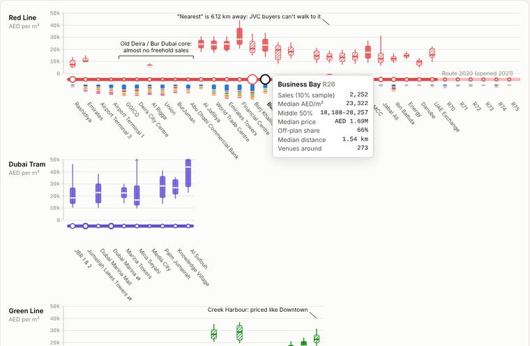
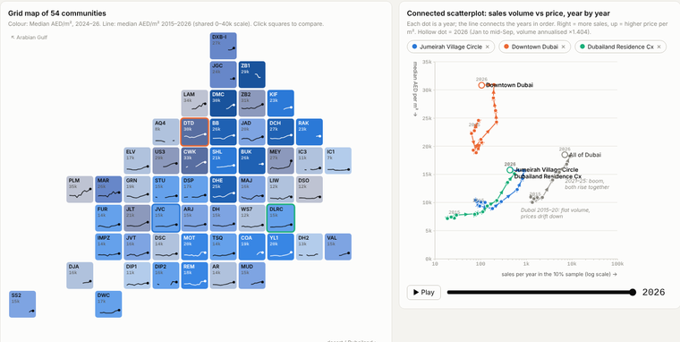
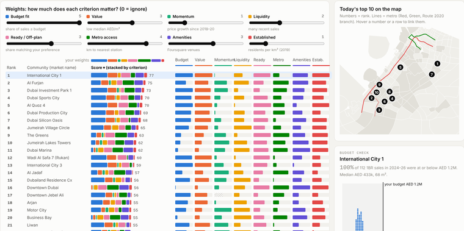

Three interactive D3 visualizations built on the Dubai Land Department transactions (10% sample), combined with the course's community boundaries, metro stations, population and Foursquare venues. Each one answers a question that a city planner, an investor/developer or a buyer would ask, and none of them is a time-series line, a weekday bar chart or a choropleth like Parts 1 and 2.

Every metro and tram station as a schematic strip map with a price glyph, sales volume and venue mix, linked to a station profile (histogram, waffle and geographic catchment map).

A grid map of 54 communities whose colour suppresses unreliable values (VSUP), linked to connected scatterplots that trace each community through the 2015–2026 cycle.

A LineUp-style multi-criteria ranking with weight sliders and personas, linked to a top-10 map and a unit dot plot that checks every recent sale against your budget.
| Step | Rows before | Removed | Why |
|---|